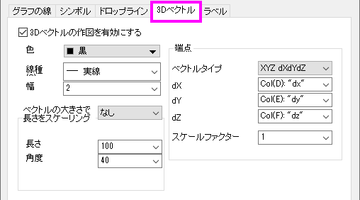
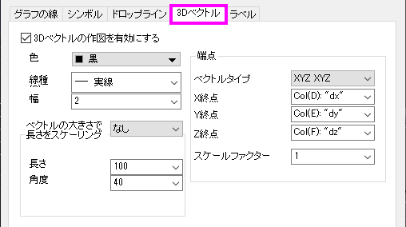

Origin 8.5からは、ベクトルの始点と終点を指定するXYZ XYZデータから3Dベクトルプロットを作成できます。または、XYZ dXdYdZデータから3Dベクトルを作成することもできます。これは、開始点XYZからのベクトルdXdYdZをプロットします。3Dベクトルグラフを作成したら、下の3D ベクトルタブで次のことを簡単に実行できます。
|  |  |
| 3DベクトルXYZ dXdYdZグラフの3Dベクトルタブ | 3DベクトルXYZ XYZグラフの3Dベクトルタブ |
3Dベクトルを有効にするかどうかを指定します。ツールバーまたはメインメニューから3Dベクトルグラフを作成した場合、チェックボックスは自動的に有効になります。
色のボタンからベクトルの色を選択します。
実線（デフォルト）または一点鎖線のスタイルを選択します。
このコンビネーションボックスでベクトルの太さを入力または選択します。 単位は、ポイントです。
| ベクトルの大きさで長さをスケーリング |
ベクトルの大きさの変化に合わせて矢先形状の長さをスケールします。 使用可能なオプション：
|
|---|---|
| 長さ |
『長さ』コンビネーションボックスで、矢先の長さを決定します。 単位は、ポイントです。 |
| 軸の開始角度（度） |
矢先の角度を決定します。 |
| 閉じる/開ける |
矢先を塗りつぶすには、閉じるボタンを選択します。 矢先を塗りつぶさない(枠のみにする)には、開けるボタンを選択します。 |
| ベクトルタイプ | XYZ XYZ 3DベクトルまたはXYZ dXdYdZ 3Dベクトルのどちらを作成するかを指定します。 |
|---|---|
| X端点 | これは、XYZ XYZがベクトルタイプドロップダウンリストで選択されている場合にのみ利用可能です。X端点ドロップダウンリストからXの端点の値を持つ列を選択します。 |
| Y端点 | これは、XYZ XYZがベクトルタイプドロップダウンリストで選択されている場合にのみ利用可能です。Y端点ドロップダウンリストからYの端点の値を持つ列を選択します。 |
| Z端点 | これは、XYZ XYZがベクトルタイプドロップダウンリストで選択されている場合にのみ利用可能です。 Z端点ドロップダウンリストからZの端点の値を持つ列を選択します。 |
| ｄX | これは、XYZ dXdYdZがベクトルタイプドロップダウンリストで選択されている場合にのみ利用可能です。それはあなたがdXdYdZベクトルのX成分を選択することを可能にします。 |
| dY | これは、XYZ dXdYdZがベクトルタイプドロップダウンリストで選択されている場合にのみ利用可能です。それはあなたがdXdYdZベクトルのY成分を選択することを可能にします。 |
| dZ | これは、XYZ dXdYdZがベクトルタイプドロップダウンリストで選択されている場合にのみ利用可能です。それはあなたがdXdYdZベクトルのZ分を選択することを可能にします。 |
| スケールファクター |
ベクトルの長さを拡大縮小する値を選択または入力します。 たとえば、.5を入力すると、ベクトルの長さはオリジナルの半分の長さになります。 |